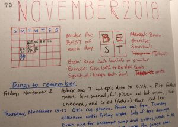
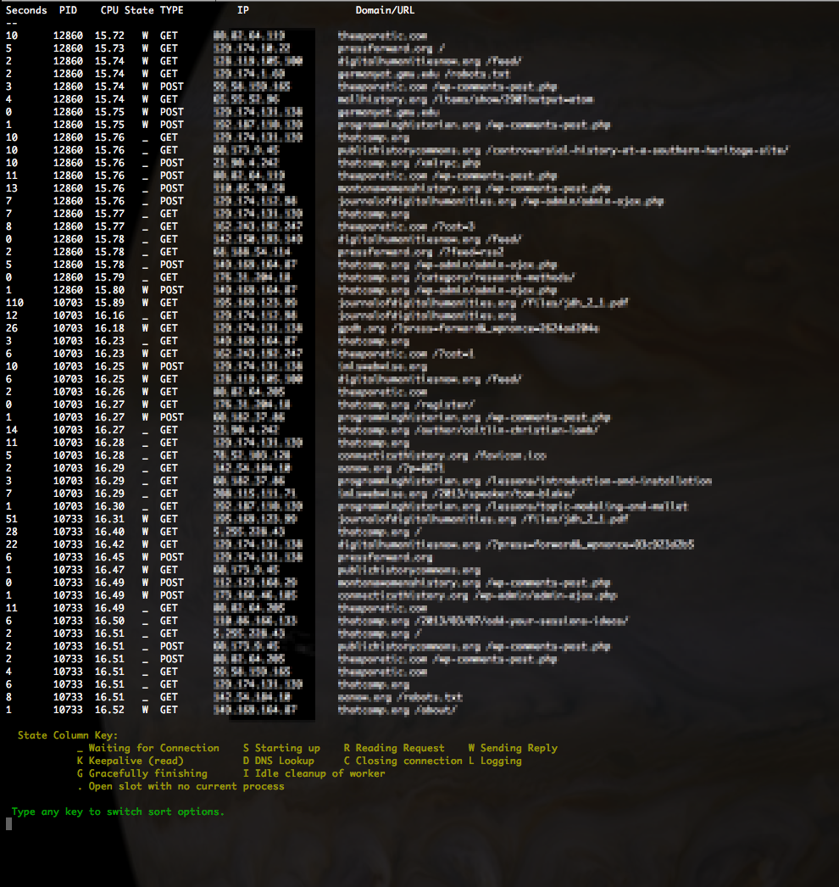
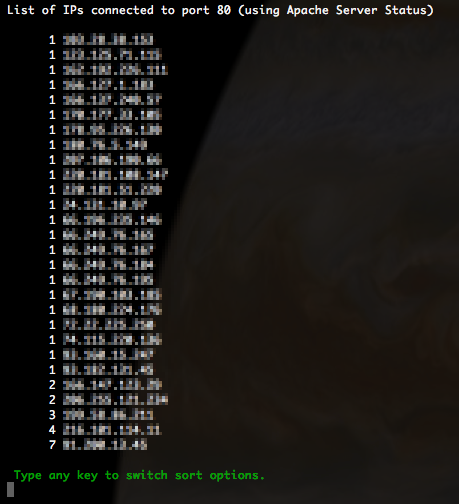
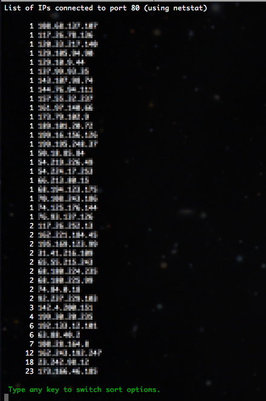

I have been reading several books lately that are encouraging me to use my time wisely and helping me realize I can accomplish whatever I want to do.
My wife is also starting up a life coaching business soon, http://jessicashepherd.coach, and all of this has got me thinking of ways for me to improve on a daily business.
For about a year now, I have been tracking things I want to do to improve. I have a journal that I write in nearly daily. At the beginning of each month, I decide on a few things that I want to focus on for the month, draw a little chart, and track those things each day.
Last month I came up with a nifty acronym to help me focus on things. At first I wanted it to be MOST, to make the MOST of each day, but I couldn’t think of anything for the “O”, so I came up with the next best thing; BEST, as in make the BEST of each day. Each letter stands for something to focus on each day.
B = brain. Do something to make you smarter.
E = exercise. Work your body.
S = spiritual. Do something to get closer to God.
T = talent. Do something to improve an existing talent or start learning a new one.
So this month, to make each day the BEST, I’m working on
B = brain: reading The Success Principles by Jack Canfield and Janet Switzer
E = exercise: give 100% when running, stretching, and 100 pushups program
T = talent: write a book. I have always wanted to write a sci-fi or fantasy book, so I am!
You can also see that I’m trying to be creative with lettering the month and year, and the design for filling in each days box, and miserably failing. Perhaps that will be a talent goal for a future month…
The prompt that is generated uses a command to clear the text color that I hadn’t seen before: tput sgr0
My prompt (which I put in the ~/.bash_profile file) is:
#PROMPT
# To enter an emoji, while in insert mode type Ctrl-v, then enter the UTF8 code
# for the emoji, ex. U26A1 (note, use capital letters), then type ESC key. You
# can get a list of UTF8 emoji codes here: http://graphemica.com/
export PS1="\[\033[38;5;39m\]\u\[$(tput sgr0)\]\[\033[38;5;15m\]@\[$(tput sgr0)\]\[\033[38;5;229m\]\h\[$(tput sgr0)\]\[\033[38;5;15m\] [\[$(tput sgr0)\]\[\033[38;5;76m\]\w\[$(tput sgr0)\]\[\033[38;5;15m\]]\n\[$(tput sgr0)\]\[\033[38;5;215m\]⚡\[$(tput sgr0)\] "
So, of course, I spent the next 40 minutes trying to figure out all I could about that command, and more specifically, what ‘sgr’ meant.
I first scoured Google search results. Mostly just information about tput. Then I took to the manual pages: man tput was helpful in learning about what tput does. That led to man terminfo and finally to man ncurses. None of those man pages define ‘sgr’, but ‘ncurses’ did give a better clue by stating that “Thencurseslibrary can exploit the capabilities of terminals which implement the ISO-6429 SGR 39 and SGR 49 controls”
And there we go! Page 75 of the PDF (page 61 internally numbered), section 8.3.117!
SGR – SELECT GRAPHIC RENDITION
And the 0 means = “default rendition (implementation-defined), cancels the effect of any preceding occurrence of SGR in the data stream regardless of the setting of the GRAPHIC RENDITION COMBINATION MODE (GRCM)”
To make things a little more readable, I made the color codes into variables:
#PROMPT
# To enter an emoji, while in insert mode type Ctrl-v, then enter the UTF8 code
# for the emoji, ex. U26A1 (note, use capital letters), then type ESC key. You
# can get a list of UTF8 emoji codes here: http://graphemica.com/
BLUE='\[\033[38;5;39m\]'
PALE_YELLOW='\[\033[38;5;229m\]'
RESET='\[$(tput sgr0)\]'
GREEN='\[\033[38;5;76m\]'
export PS1="${BLUE}\u${RESET}@${PALE_YELLOW}\h${RESET} [${GREEN}\w${RESET}]\n⚡${RESET} "
And there we go. Much too much time learning stuff! And my prompt looks like this:
It took me too long to figure this out, and the documentation wasn’t as clear as it should be. This is how the port bindings map out when using docker-compose with wikijs:
config.yml -> host = docker-compose.yml -> left side of : in the ports section of the wikijs image
config.yml -> ports = docker-compose.yml -> right side of : in the ports section of the wikijs image
Quick script I whipped up today to grab all of the domain names on a server.
#!/bin/bash
if [ -e alldomains ]
then
rm alldomains
fi
alldomains=( $(find /etc/httpd/conf.vhosts/ -name *.conf) )
for domain in ${alldomains[*]}
do
cat $domain | egrep "ServerName|ServerAlias" | egrep -v "#" | sed -e 's|ServerName||' -e 's|ServerAlias||' -e 's|www.||' -e 's|:80||' | tr -s ' ' '\n' | tr -d ' ' | sed -e '/^\s*$/d' >> alldomains
done
sort alldomains | uniq | sort -o alldomains
This gets all of the domains from ServerName and ServerAlias lines, takes out all of the white space and empty lines, and creates a file with just a list of the unique domain names.
This accounts for subdomains that use ‘www’ or have port :80 on the end.
For instance, www.somedomain.com and somedomain.com are the same, so the script takes out the ‘www.’ which leaves to copies of somedomain.com, which it then deletes one of them in the final output to the file. The same for ‘:80’.
I perhaps went a little overboard and made it pretty robust. I was going to take the opportunity to learn some ruby, but ended up writing it in Bash. One thing I learned is that Bash does not handle comparing floating point numbers. And that was a bit part of the requirement.
I’ll run through how to use the script as well as go through some of the logic found in the script.
Running the Script
Rather than repeat everything on the github page, just take a look there for steps on how to set up and run the script.
Basically, you just run the script on the command line, it prompts for the path to the omeka install (or you can give it after the command), and automatically upgrades Omeka and Neatline to then next higher version number.
./onus.sh /path/to/omeka/install
You can add some flags/options to the command to upgrade Omeka and Neatline to a specific version, or exclude the upgrading and just make a backup copy of the database and files into a zip file.
About the Script
The purpose of the script is to upgrade Omeka and Neatline. One big problem arose when upgrading sites that were previous to 2.0.0.
Omeka and Neatline both go through some significant database (and code) changes from 1.5.x to 2.x.x. The biggest seemed to be that the upgrade script for Neatline didn’t “take” and needed to be done manually. Here are the steps to do that by hand (the script will take care of this if you use it).
Upgrading Omeka and Neatline from 1.5.x to 2.x.x
The first step is always to make a backup copy of the database and files. That way if anything goes awry, you can easily put things back together.
To back up the database, simply take a MySQL dump.
Do this in the main directory of Omeka. Then make a zip file of the entire Omeka directory.
zip -r omeka-backup.zip /path/to/omeka/
Next, deactivate any plugins you have installed, including Neatline and NeatlineMaps. One of the big changes with 2.x.x version is that NeatlineMaps is rolled into Neatline.
Grab a 2.0.x version of OmekaEither do this with github
Add the 2.0.0 version of Neatline plugin into the NewOmeka/plugins directory, along with any other plugins you may need. NeatlineText, NeatlineSimilie and NeatlineWaypoints may be needed if you used that functionality in the previous version.
Copy the db.ini file from the old installation to the NewOmeka/ directory.
Now load the admin page for NewOmeka/ in the browser: http://domain/NewOMeka/admin/. Upgrade the database and login to upgrade and reactivate the Neatline plugin and other plugins as needed.
You may notice things go smoothly, except the existing Neatline exhibits may not transfer. To get them into the new database tables, add the following two lines at line 80 in the NewOmeka/plugins/Neatline/migrations/2.0.0/Neatline_Migration_200.php file:
Initially, I used the script to upgrade both Omeka and Neatline to the next higher version, going through every single minor version incrementally. When upgrading from Omeka 1.5.1 and Neatline 1.0.0 to the latest versions (2.2.2 for Omeka and 2.3.0 for Neatline), I had to run the script over 20 times!
That was way too intensive, so next I added some logic to just skip to the next major release. That dropped the times needed to run the script down to four. But I could do better than that! I added in some command line options/flags that allow you to upgrade to any Omeka or Neatline version you specify. Now you can upgrade from Omeka 1.5.x and Neatline 1.x.x directly to Omeka 2.0.4 and Neatline 2.0.0, then right to Omeka 2.2.2 and Neatline 2.3.0. Two steps!
Bash and floating points
As mentioned above, Bash does not work with floating points, so I had to create a function to deal with that. Dealing with version numbers, especially with minor version numbers kind of requires the need to compare floating point numbers…
In the script I use two different functions:
# Compare two floating point numbers.
#
# Usage:
# result=$( compare_floats number1 number 2 )
# if $result ; then
# echo 'number1 is greater'
# else
# echo 'number2 is greater'
# fi
#
# result : the string 'true' or 'false'
# number1 : the first number to compare
# number2 : the second number to compare
function compare_floats() {
echo | awk -v n1=$1 -v n2=$2 '{if (n1<n2) printf ("false"); else printf ("true");}'
}
This function basically compares two numbers. It outputs true if the first number is greater than the second number, and false if the first number is less than the second number. Another way to think about it would be, is the second number less than the first number?
# Pass the current version first, then the array
# the function echoes the version just greater than the current version,
# i.e., the next version to upgrade to.
#
# Usage:
# variable=$( get_next_version $num array[@] )
#
# variable : the next version greater than $num
# $num : the current version
# array[@] : an array of all possible versions
function get_next_version() {
num=$1
declare -a ARRAY=("${!2}")
for i in ${ARRAY[@]}
do
if awk -v n1=$num -v n2=$i 'BEGIN{ if (n1<n2) exit 0; exit 1}'; then
echo $i
break
else
continue
fi
done
}
For this function, you pass the current version and an array of possible version numbers. The function will compare the number you pass it, compare it with the array, and echo the next highest number.
Both functions use the same awk command, but in a little different format. They test wether one number is greater than the other, and return ‘true’ or ‘false’.
Figuring out the possibilities for Apache and PHP reminds me of a Dr. Seuss book, “Fox in Sox”. It’s a favorite of mine. I love reading it to the kids. In it, Mr. Fox tries to get Mr. Knox to say all kinds of ridiculous (in meaning and hard to say) tongue twisters. At one point Mr. Knox exclaims:
“I can’t blab such blibber blubber!
My tongue isn’t make of rubber.”
That’s what my brain felt like after trying to figure all of the options for Apache and PHP. To combat my rubber brain, I created this flow-chart to help me keep track of the options, the pros and cons for each, and the path I finally chose.
First off, a list of requirements and goals:
Chroot each vhost to it’s own directory, and have Apache and PHP run on that vhost’s server account
Speed, run Apache and PHP at their most effective and efficient levels
Utilize an opcode cache, APC, to speed up PHP pages
Use trusted repositories to make installation and upgrading easier
Here’s what I eventually figured out about Apache and PHP:
Click on the image to see a larger view
These sites were helpful for the initial set up of PHP as CGI with mod_fcgi and Apache in chroot (mod_fcgi sends one request to each PHP process regardless if PHP children are available to handle more, and no sharing of APC opcode cache across PHP processes):
This site was helpful for setting up PHP as CGI with mod_fastcgi and Apache in chroot (mod_fastcgi sends multiple requests to a PHP process, so the process can send them to children processes, and having one PHP process for each site allows for APC opcode cache to be usable.)
I ended up going with Apache’s mod_fastcgi for using PHP as a CGI, and NOT using PHP-FPM, while running Apache in threaded mode with apache.worker enabled.
To get this set up is pretty easy. I already had Apache and PHP installed and running (with PHP as CGI using mod_fcgi), so here are the steps I used to convert it to run mod_fastcgi and apache.worker. I’m running CentOS 6.3.
Install the RPMForge repo for installing mod_fastcgi.
Get latest from http://repoforge.org/use/ : rpm -Uvh http://pkgs.repoforge.org/rpmforge-release/rpmforge-release-0.5.2-2.el6.rf.x86_64.rpm
yum --enablerepo=rpmforge install mod_fastcgi
Edit the /etc/httpd/conf/httpd.conf file
ServerTokens Prod
KeepAlive On
Edit the worker section. I still need to do some testing to figure out the best configuration
If there, make sure to comment out, or delete the lines for mod_php: LoadModule php5_module modules/libphp5.so
this line also: AddType application/x-httpd-php .php
The last line should be: Include conf/virtual_hosts.conf
Create a /etc/httpd/conf/virtual_hosts.conf file
Each virtual host needs to have an entry similar to this in the httpd.conf file, or I like to create a separate virtual_host.conf and include that in the main httpd.conf.
# Name-based virtual hosts
#
# Default
NameVirtualHost *:80
# Begin domain-name.com section
<VirtualHost *:80>
DocumentRoot /var/domain-name/home/html/
ServerName domain-name.com
ServerAlias www.domain-name.com
# Rewrite domain name to not use the 'www'
RewriteEngine On
RewriteCond %{HTTP_HOST} !^domain-name\.com$ [NC]
RewriteRule ^/(.*) http://domain-name.com/$1 [R=301]
# Specify where the error logs go for each domain
ErrorLog /var/logs/httpd/current/domain-name.com-error_log
CustomLog /var/logs/httpd/current/domain-name.com-access_log combined
<IfModule mod_fastcgi.c>
SuexecUserGroup domain-name domain-name
ScriptAlias /cgi-bin/ "/var/www/cgi-bin/domain-name/"
<Directory "/var/domain-name/home/html">
Options -Indexes FollowSymLinks +ExecCGI
AddHandler php5-fastcgi .php
Action php5-fastcgi /cgi-bin/php-fastcgi
Order allow,deny
Allow from all
</Directory>
</IfModule>
</VirtualHost>
# End domain-name.com section
Things to note:
The line with SuexecUserGroup should have the user/group for the project.
Create the php-fastcgi file
Add a /var/www/cgi-bin/projectname/php-fastcgi file for each project. This allows php to run as FastCGI, and use suEXEC. The php-fastcgi file needs to be under suexec’s default directory path /var/www/cgi-bin/.
#!/bin/bash
# Set PHPRC to the path for the php.ini file. Change this to
# /var/projectname/home/ to let projects have their own php.ini file
PHPRC=/var/domain-name/home/
export PHPRC
export PHP_FCGI_MAX_REQUESTS=5000
export PHP_FCGI_CHILDREN=5
exec /usr/bin/php-cgi
Things to note:
The directory and file created above must be have user/group of the project (the same as the user/group of the /var/projectname/ directory)
The directory and file must be executable and writable by the owner ONLY.
If you get Apache Internal Server errors, check /var/log/httpd/suexec.log
For each site, you can specify how much RAM the APC module can use. For large, busy sites, you set this higher. Not setting this defaults to 64MB, which is a bit more than needed for the average WP site. Change the last line in the /var/www/cgi-bin/projectname/php-fastcgi file:
exec /usr/bin/php-cgi -d apc.shm_size=128M
Change php.conf
Comment out everything in the /etc/httpd/conf.d/php.conf file so php is not loaded as a module when Apache starts.
Apache multi-threaded
Edit the /etc/sysconfig/httpd file to allow Apache to use multi-threaded mode (httpd.worker) which handles basic HTML files much nicer (less RAM). Uncomment the line with HTTPD=/usr/sbin/httpd.worker
Config Check
Check the Apache configuration files to see if there are any errors.
service httpd configtest
If all good, restart Apache
service httpd restart This will stop the running httpd service, and then start it again. Use this command after installing or removing a dynamically loaded module such as PHP. OR
service httpd reload This will cause the running httpd service to reload the configuration file. Note that any requests being currently processed will be interrupted, which may cause a client browser to display an error message or render a partial page. OR
service httpd graceful This will cause the running httpd service to reload the configuration file. Note that any requests being currently processed will use the old configuration.
When I first became a systems administrator of a large web server, I wanted to know what the current traffic to all of the virtual hosts (vhosts) looked like. I wanted to see which domains were getting the most traffic and where that traffic was coming from. So began my long search for a sufficient tool. There are many out there (apache-top, Apachetop, wtop, htop, IPTraf, etc). But they didn’t do all of the things I wanted. Basically they were just command line versions of the output of Apache mod_status, or they did complex log analysis.
I wanted more. The ability to search, or show only a certain domain name, see a list of IP address and how many connections from that IP address (to detect botnet attacks), and more.
So in true sys admin fashion, I built the tool myself. It is sufficiently stable and usable enough to warrant a blog post and hopefully engender some usage by others, which hopefully will encourage ideas and improvements from the community. Go ahead and grab a copy from the github repo, https://github.com/mossiso/atop
My idea is not much different than some of the tools I linked to. I’m basically writing a wrapper around the Apache mod_status output, but this tool has the ability to do more. So here’s a little walk through of what this tool does.
Requirements
Apache with mod_status: This tool is built around the Apache mod_status output, so that obviously has to be installed and set up. The ExtendedStatus option has to be enabled in the httpd.conf file.
links: This is a command line based web browser of sorts. Using the -dump flag, it just spits out the page to the command line.
netstat: This is used for one of the options to display all of the IPs connected to the webserver (via port 80).
This tool is just a BASH script, so once you download the “atop” file, just plop it anywhere in your home directory on your web server, change the permissions so it is executable
[code lang=”bash”]chmod 700 atop[/code]
and run it
[code lang=”bash”]./atop[/code]
There are now several options you can sort the results by:
==============================================================
a = sort all threads by time
c = sort by CPU, no GCRK_
i = list IPs connected to port 80 (uses Apache Server Status)
k = sort by K (Keep alives)
l = list IPs connected to all ports (uses netstat)
n = list IPs connected to port 80 (uses netstat)
o = sort open connections by CPU
p = sort only POST threads by time
r = raw apache status output (good with limit of at least 50)
s = search for a term, returns raw Apache Server Status results
w = sort by inactive workers
q = quit
To see the list of options while the command is running, just type any key on the keyboard.
Getting the BASH script to be responsive to the keyboard was tricky, and took me the longest time to figure out. For a while I could get the results to be displayed and refresh every N seconds, I could even get it to do the sort options, but only if I started the script with that option. So I was super excited to figure out the logic to get the script to respond to input.
The trick lies in setting the output commands in an infinite while loop. At the end of the loop it does a regular bash prompt using “read”. Normally this waits for a response, but the timeout feature allows you to set that to one second, which then goes through the while loop again. If a key is pressed, it breaks the while loop and prints the options message. When an option is selected it goes through that while loop.
Features
Some of the sort options I use most often are POST (p), CPU (c), IPs according to Apache (i), and IPs according to the server (n). I walk through those one by one.
This is probably the most helpful of the options. Usually, when a website is getting hammered, it’s because it is getting comment spam or login attempts. These all require POST requests. If you see a large number of POST requests for a single vhost, then look at the IP addresses sending the requests; you can bet if all the requests are from the same IP, that it should be blocked.
CPU

This is a pretty good overview of what Apache traffic your server is handling. It shows GET and POST requests and sorts them with the most heavy CPU usage requests on the bottom. It filters out open processes with no connections, and a few other things like closing connections.
IPs (Apache)

This one is great, too. It shows the IP addresses that are connected to Apache, and sorts them by how many connections are being made. The IPs with the most connections are at the bottom. If you see an IP address with over 10 connections for a few minutes, you can bet they are up to no good. Double check with the POST option to see if they are spamming.
IPs (Netstat)

This option gets all traffic to port 80 using netstat. It filters out local traffic (and GMU traffic, but you can edit that out), and then does the sorting and organizing by how many IP addresses are connecting. This gives a little more detail than the other IP option.
If you find any bugs in the script or have a great idea for other options, feel free to fork or submit patches, or report bugs on the github repo.
When I was a teenager, my mom started taking note of everything the family did on January 20. It was just some random day, and some random idea to do as a fun thing for the family. Over the years we’ve kept that up as a family; sometimes more or less involved. A couple of years ago I decided to go all out and record as much of my day as possible. So here it is, my January 20, 2014:
12:01am-4:00am
Woke up a few times: potty, too much light, tossing, turning, etc.
4:00am-7:00am
Alarm went off at 4am. Hit snooze a couple of times, because, hey, it’s a holiday. Got up around 4:28am. Put on think, warm, wool socks and a long sleeve shirt. Went down stairs, one step at a time, like everyone else. Took my thyroid pill with some water. Prayed, read BoM (Alma chapter 43) and an article from January 2014 Ensign.
Then it was dissertating time. Dissertated until 7:18am. I didn’t feel like I got much done on the dissertation, and I didn’t. I started reading a dissertation written in 1984 in German about the same topic. I’ll use that as a good source for both parts of my dissertation (both parts being the history/narrative of the building project and associated concentration camps, and the second part what has happened in that community since the war, see http://nazitunnels.org for more info, and APPENDIX A for the text of an upcoming grant application that succinctly outlines my dissertation in less than 1000 words-which this write up of the day will not be.)
Read a few other things here an there, tried to figure out how I’m going to get hours and hours of research and writing done with only two hours a day to do it in. Wrote down a really cool idea I have for an interactive map that shows the flight range of aircraft used in World War II. This would help with explaining the German need to move factories underground because the Allied bombers were reaching farther and farther into German territory (see APPENDIX B for information on Grandpa Shepherd’s involvement in said bombing raids).
If I can pull that off, it would be part of my dissertation, making the argument for it being a digital history dissertation, and thereby hopefully not having to write as much, but will probably write over 200 pages anyhow, and closer to 250 pages, but way less than the average of 300 page history dissertations and nearly a third of the German history dissertations I’ve seen which go over 400+ pages because of extremely long, run on sentences like this one that are really popular in German academic writing and sometimes take up half a page with just one sentence.
I probably won’t do stuff like that in my dissertation, though.
Somewhere around 7am kids started waking up, going into my bedroom (where only Jessica lay sleeping, I was in the living room, not in the basement as usual, because it’s dark and cold down there. When the kids do wake up if I’m in the living room, I usually quickly turn off lights so they don’t know I’m down there and then quietly go into the basement to finish studying in peace and quiet, leaving the silly kids to my wonderful, very capable and caring spouse.)
7:00am-8:00am
So i was just getting into the reading and note taking for dissertation work, but I have scheduled myself to stop at 7am and do some exercising. I almost scrapped the normal routine, because, hey, it’s a holiday. But I knew I’d have to write a quick, short write up of the day today, and I wanted to write that I had exercised, so I went to the dungeon, er, basement to do my daily workout routine. Today was cardio-vascular (see APPENDIX C for weekly work out schedule). That took a good 28 minutes and made me realize how old and out of shape I am. I took a shower and got ready for the day.
8:00am-10:00am
I’ll cut this one short. Ate breakfast with family and got all the kids ready for our service project. (see dear, I can be brief.) (addendum from the spouse: lots, and lots, and lots of whining and complaining from the leaches, I mean children.)
10:00am-12:00pm
Planned on leaving for service project by 10:10, 10:15 at the latest. Got in the car to much crying, fighting and complaining at 10:22. Sang “Happy, happy, cheerful, cheerful” to cut through the bickering and noise. Got most of us in a more smiley mood.
Had a great time being crafty at the service project. Saw a co-worker and another work-related-person there. Mostly helped Anthea color on herself and followed her around when she was done coloring. She apparently didn’t get enough food for breakfast and quickly ate the bag of pretzels that January brought. As she wandered around, she spied a container of sandwiches that some thoughtful mother had brought for her child. Anthea made a b-line for the table and grabbed a sandwich from the container, much to the chagrin of myself. The kind mother said it was OK if she had it (a sesame butter and banana on white hamburger bun sandwich), to which Anthea was much contented, and I was much grateful.
Our crafting being done about the noon-o-clock hour, and all of us much hungry, we headed home. Anthea fell asleep on the way, and stayed in that blessed condition for an hour after. The kids were all very awesome, by the way. There was no complaining, much helping and looking after each other, and participating with happy smiles and much craftiness. (see APPENDIX D)
12:00pm-2:00pm
Got home and warmed up some leftovers for myself (it was pasta with pesto sauce and cherry tomatoes, quite tasty). Tac and Asher wanted nothing more than a bowl of cereal. Since Jessica wasn’t home, and I was too lazy to argue, I let them dine on crunchy wheat o’s and crunchy wheat squares with milk, because, hey, it’s a holiday. Who knows what Jonas ate. He must eat something because he keeps growing.
Anthea woke up around 1-ish, so I helped her eat something, can’t remember what (she loved dinner from last night, but wanted none of it today).
Teancum and Asher played and messed up the house while Jonas finished his tuba practicing, oh, I mean French horn. He also did an extra chore of vacuuming the upstairs so he could earn some computer time.
I talked Jessica into taking us all on her shopping trip, since it was rare we got to spend a Monday together. So we got all loaded into the car and were off by 2pm, except for Jonas who wanted to stay home, and January who was at a friends for lunch, bowling, and some fun at her house afterwards.
2:00pm-2:40pm
I put this time in for the benefit of specifying how long it took to get gas at Costco. It only takes 15 minutes to drive there. The remainder of the time in the above timeframe was spent in line for gas. I dropped Jessica off at the entrance to Costco so she could get started on gathering a heaping cartful of food. I was to get gas, go to Home Depot (literally across the street) to get replacement smoke detectors for our out of date units from the basement and kitchen area (yes, Mom, to replace the very one that woke you up for that one night with it’s incessant chirping, alerting us to the fact that, no, not the batteries need to be replaced, but the whole unit).
Anyhow, while in the near eternal line for gas, my bright and intelligent 6 year old questioned why we were going to a different store if Mom wanted to be with me so much. Great question, son. So skip going to HD by myself with three small children, and instead drive around the whole parking lot of Costco to find a spot (had to drive around because there were sooooo many people who’ve never seen snow before so they freak out and want to buy a million months worth of food for the one or two days that there will be snow – remember, Monday was our regular shopping day so we weren’t like all these other crazy people. That or it was a holiday so people were out shopping.) Found Jessica in the store, she was just about done. We only had a couple of good samples- chocolate covered granola bars of some kind… tasty.
2:40pm-4:40pm
I hate shopping, but when I’m with Jessica, even the most mundane and boring things are fun. I dare say, it’s a jolly holiday
With Jessica
Jessica makes my ‘eart so light
When the day is gray
And ordinary
Jessica makes the sun shine bright!
Oh ‘appiness is bloomin’
All around ‘er
The daffoldils are smilin’
At the dove
When Jessica ‘olds my ‘and
I feel so grand
My ‘eart starts beatin’
Like a big brass band
Oh, it’s a jolly holiday with Jessica
No wonder that it’s Jessica that I love!
Costco, Home Depot, Walmart… Dang, that’s a lot of shopping. At Walmart, Teancum and Asher started going crazy with the broccoli. Tac hates broccoli, so Asher started chasing him around with it. They went a little overboard, so I had to take them out to the car. As we were waiting, Tac started bouncing around like he had red hot fire ants down his pants. I didn’t want to take both of those crazy kids into the store, and Tac had to go right then, so… quick stand at the side of the car, pee by the back wheel, cover up when people walk by… here’s a wet wipe to clean your hands, cause I can tell you need it, done. Now just wait for Jessica. Dang, now Asher needs to go too. Well, I’ll get you out, but just wait, Mom should be done any second now, so just wait… oh, got your pants down around your ankles already, well, OK just pee behind the car then. Like seriously, 10 minutes later Jessica is finally done. Apparently that lady on the checkout lane won’t be winning any speed contests, but I hear there are a couple of snails in the park that are looking for a date.
And back home again, exactly 2 hours and 40 minutes after we left. I timed it.
5:00pm-8:00pm
Let’s just skip the twenty minutes between 4:40 and 5pm, shall we.
Made some yummy stir-fry for dinner. Thought I was just about as good as Dad with my cooking skills. I really appreciate his making dinner all the time, and some how it rubbed off on me and I love to cook, too. I added something Dad would probably never have done, though (which is odd considering he loved okra and I remember having cow tongue and liver), and that was tofu!
Kids always complain about dinner… don’t want it, don’t like it. Have you tried it? No, don’t want to. Well try it first. Oh, hey, this is pretty good. I do like green eggs and ham, thank you, thank you Sam-I-am. Had to start dinner without Jessica because she didn’t get enough shopping out of her system and she was at Target looking for things to trade money for.
Let’s just say that after dinner is usually pretty crazy, and today was worse. Plus we tried to have Family Home Evening. I sang “Geneology, I am doing it” while Jessica played and sang “Family History, I am doing it.” Only the second verses are the same on that one. I explained that doing our family history includes writing in our journals, or writing down what happened to us today, and how my family started this fun tradition to write down what happened on January 20, just for fun. Our FHE was to write down what we did today. You have read the paltry attempts at historical narrative from everyone else, now your eyes bleed with amazement and your brain bulges with incomprehension as you graze upon the writings of this budding pleonastic historian. I encouraged all to write with this witty turn of prose: If you don’t write about what you did, then you don’t exist for today.
FHE was mostly exasperating. Let’s just say my temper during FHE was inversely proportional to the hyper activity, and leave it at that. Scriptures was two verses, and prayer was two sentences…
Getting kids to bed went well. I seem to be able to handle the insanity of the hour much better than in years past.
I sang “Der Kuckuk und der Esel” (see APPENDIX E) to Anthea and put her to bed. I brushed Asher and Teancum’s teeth and read them a couple of Dr. Seuss books.
8:00pm-11pm
I wrote this.
————————————————-
APPENDIX A
Nazi Tunnels: Underground Factory Dispersal and Forced Labor Camps At Porta Westfalica
Sitting atop the Wittekindsberg hill south of Minden, Germany nestled against the town of Barkhausen, is a massive monument to a massive historical figure of nineteenth-century Germany. Built from 1892-1896 is a large bronze statue of William I within a gazebo made from sandstone taken from the very hill upon which it rests. Dedicated to the memory of Wilhelm dem Grossen, this monument stands for some today as a symbol of German unity. Buried underneath this monument are remnants of a more discordant German past.
Mining during the nineteenth century left large, open mines in Wittekindsberg and Jakobsberg hills, on the opposite banks of the Weser River from each other. These tunnel systems went virtually unused throughout the early twentieth century, but found use again in the final years of World War II, as Nazi leaders made concerted efforts to protect the increasingly targeted aircraft factories by relocating them to physically separate locations, and in some cases into underground facilities. Forced laborers from nearby concentration camps supplied the labor. One such project was located in the unused mines in Porta Westfalica’s hills, with inmates supplied from the Neuengamme Concentration Camp near Hamburg and prisoners of war from Russia and Poland. Stone once used to commemorate and memorialize the unification of fragmented German kingdoms was now discarded in favor of the underground space, just as the lives and humanity of inmates was discarded for the labor they could provide. Such projects were at the heart of Nazi desires to eradicate through work anybody they felt undeserving of life.
This dissertation describes the use of forced labor to convert existing mines and tunnel systems in Wittekindsberg and Jakobsberg into industrial spaces, outlines the plans to use the tunnels as underground dispersal locations, and explores the post-war history of the tunnels ending with present day issues surrounding memory and appropriate ways to deal with the physical remains of the tunnel systems and labor camps.
This work is unique in several ways. First, nearly all scholarly narratives about the nearly 30 underground dispersal projects throughout Germany are written in German, French, Danish or Czech. To date, there are only two publications written in English that are dedicated to the history of an underground dispersal project and associated labor camps. This work will present the first English scholarship of the tunnels and camps at Porta Westfalica.
A second unique aspect is the timeframe to be studied. Most works on underground dispersal projects narrate only the few years surrounding the tunnel and labor camp existence, ending with liberation by Allied forces. This work will extend the conventional timeline by researching the post-war history of the tunnels. The presence of these tunnel projects has had lasting effect on the local community. Not only is the landscape often physically altered, but the collective memory of the local citizens must also bear witness of the atrocities perpetrated against inmates. Local citizens tell stories about who, what and why concentration camps were located in their neighborhoods; this also becomes part of the history of the underground project. While this work does not seek to “dredge up dirty laundry” about individuals involved, it does seek to highlight the perpetual issues of memory and commemoration that German citizens must face since the end of World War II.
Finally, the use of new media will bring this work into the realm of digital humanities by presenting the research materials and the scholarly writing process in the public sphere through the use of an online archive and scholarly website, and by creating 3D representations and geographical maps of the tunnel systems and their geo-spatial relationships with the concentration camps. This work will present a unique aspect of the history of the underground dispersal projects by utilizing new ways of visualizing and presenting data and sources, and implementing research methods from other disciplines such as the computer sciences and geography.
A two-day visit to Porta Westfalica was made in July 2013 as part of a research trip funded by the Dr. Richard M. Hunt Fellowship from the American Council on Germany. While there, I met with Dr. Gerhard Franke, the local heritage curator for Porta Westfalica. He showed me several former labor camp and tunnel locations, and had the local newspaper conduct an interview that resulted in a short article about my visit. In Hannover, I met with Dr. Rainer Fröbe, a German historian who has done extensive research on this topic.
The CEHS Research and Travel Grant will provide for two weeks in Porta Westfalica with three important research goals: visit with survivors, current and past city officials, citizens and historians; visit archives and digitize documents; and photograph the tunnels and former labor camps. Unfortunately for my previous trip, I was unaware of the existence of the Concentration Camp Memorial and Documentation Center of Porta Westfalica, headed by Babette Lissner. This group has connections to many citizens and city officials who were involved with the tunnels and former labor camps since the war, and those who were instrumental in the creation of a memorial to the laborers. They also have documents pertaining to the city’s immediate post-war dealings with the tunnels. At least one trip to Hannover to work with Dr. Rainer Fröbe is also planned. The grant will also fund the digitization of documents pertaining to the immediate post-war decisions made about the tunnels, as well as documents listing camp inmates who died and where they were buried. Access to the city’s newspaper archives will provide an understanding of the social issues the town has faced and how they were dealt with in the public sphere. A final goal will be to photograph the tunnels, former labor camp locations, cemeteries, and obtain GPS coordinates for each location.
APPENDIX B
I got this book from the co-author and wife of the pilot for Grandpa Shepherd’s B-17. She lives only a few miles away from us and found me through a post I wrote on my blog about Dad’s funeral. Here’s a link to the book and website: http://www.ww2pilot.com/ There is not a whole lot about Grandpa specifically. His plane was called the Blue Hen Chick. Here are a couple of mission debriefings that the pilot had to write after each mission.
Mission #17 A/C # 44-6016 TNT Jeanie Fri Jan 5 1945
Target – Communications Center, Waxweiler
Briefing at 0530
Take off began at 0801
Target was close to the ground battle area. Encountered a lot of flak. Two planes landed in Belgium due to battle damage.
Landing began at 1551
Blue Hen out for repairs
Log: First of four missions in a row. Mission lasted 7:15 hours. Shepherd passed out over the target. Oxygen mask froze. McKay is in hospital. Weather bad on take-off.
Mission #26 Blue Hen Chick Sun Jan 21, 1945
Target – Highway and rail bridges, Mannheim
Briefing at 0500
Take off began at 0744
Carried 58 tons of 500 lb G.P. bombs and incendiary bombs. Two planes carried leaflets. One crew had to bail out over France. Released bombs through the clouds.
Landing began at 1519
Log: Mission lasted 7:20 hours. Mission almost the same as yesterday. Lost lead and low squadrons. Visibility very poor. Ball Turret oxygen froze. Last two days weather very bad.
Mission #35 Blue Hen Chick Tues Feb 27 1945
Target – Communications Center at Leipzig.
Briefing at 0700
Take off began at 0939
Route to the target was uneventful, the trip home was without problems.
Landing began at 1743
Log: Mission lasted 8:20 hours. Had a good mission. Flak was moderate. Pilot, Radio Operator, Ball Turret Gunner, Tail Gunner and myself finished up last mission.
Tuesday
20 Squats
30 Lunges (each leg)
40 Calf Raises
50 Second Wall Sit
100 Jumping Jacks
50 Second Wall sit
40 Sumo Squats
30 Leg Raises
20 Squats
Wednesday
50 Basic Crunch
35 Right Oblique Crunch
35 Left Oblique Crunch
35 Bicycle Crunch
35 Reverse (Hold) Crunch
35 Long Arm Crunch
35 Cross-Over Crunch
35 Half Curl
35 Vertical Leg Crunch
60 Second Plank
Thursday
30 Minutes Run Around
Friday (TiH = Till it Hurts)
30 Jumping Jacks
20 Pushups
TiH Dips
25 Pushups
TiH Bicep Curls
30 Pushups
TiH Tricep Curls
35 Pushups
TiH Front Raises
APPENDIX D
Making Cards
Making flowers
A flower bouquet
Having fun
APPENDIX E
I have sung this song, in German, to each of the kids when they are very young. Some have begged and begged for it, refusing to go to sleep until they hear it over and over again, causing me to record it to a CD which can be played on repeat until the silly child is asleep; and then, from one night to the next, they are sick of it and don’t want it anymore. Anyhow, I love to sing it to each of the kids while they are babies.
1.
Der Kuckuck und der Esel,
die hatten einen Streit:
wer wohl am besten sänge,
zur schönen Maienzeit.
2.
Der Kuckuck sprach: “Das kann ich”
und fing gleich an zu schrei’n.
“Ich aber kann es besser”,
fiel gleich der Esel ein.
3.
Das klang so schön und lieblich,
so schön von fern und nah.
Sie sangen alle beide:
Kuckuck, Kuckuck, I-a! I-a!
I have been lacking two things for so long, now that I can do it, I wonder if I will ever remember to use it!
The Problem
I use a MacBook Pro with OS X Mavericks. I log into my Linux servers with SSH. I use GNU screen to allow me to save sessions, detach, and come back later without closing running programs and what not. BUT, I can’t use the mouse scrolling for the terminal output or to scroll through files opened with Vim.
The Solution
I finally found the pieces missing to make this possible. All with a couple of lines of code and a new SIMBL bundle.
To get the scroll working in screen, just add this line to your .screenrc
defscrollback 5000
termcapinfo * ti@:te@
It’s not perfect. If you have multiple windows in a screen session, then the history buffers get all meshed together. But I usually just need to see info from a command output that is longer than the screen window, and this will let me see it. Finally! Thanks Slapitjack! See here for an explanation of the code.
To get the scroll back in Vim, whether using screen or not. You first need to install SIMBL. The version for Snow Leopard works with Mavericks. Then grab a copy of MouseTerm. The installer didn’t work, but you just need to copy the MouseTerm.bundle to /Library/Application Support/SIMBL/Plugins folder (or ~/Library/Application Support/SIMBL/Plugins if needed for just your user account). Restart your Terminal and you’re good to go.
Viola! Vim and scrolling, GNU screen and scrolling! Live as it was meant to be…


{kind=link}
{kind=link}